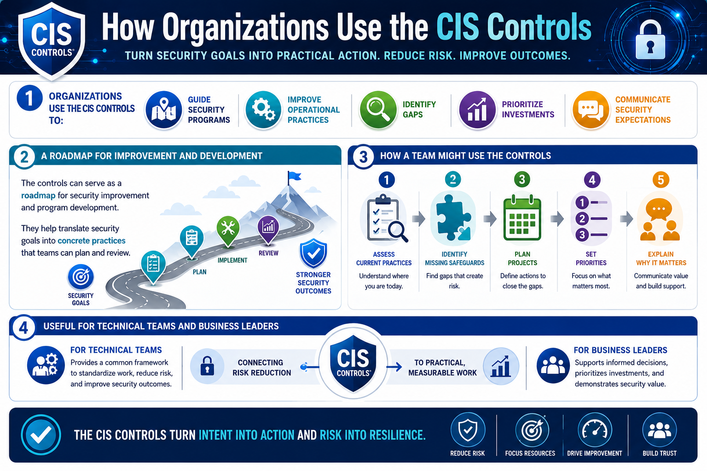

What Are the CIS Controls?
How Organizations Use the CIS Controls
Connecting to LMS... Progress: in progress
Version 1.0 | Date: 2026-06-16 | Educational guidance for understanding CIS Controls concepts.

Narration
Organizations use the CIS Controls to guide security programs, improve operational practices, identify gaps, prioritize investments, and communicate security expectations.
The controls can serve as a roadmap for security improvement and program development. They help translate security goals into concrete practices that teams can plan and review.
A team might use the controls to assess current practices, identify missing safeguards, plan projects, set priorities, and explain why certain activities matter.
This makes the CIS Controls useful for both technical teams and business leaders because they connect risk reduction to practical work.